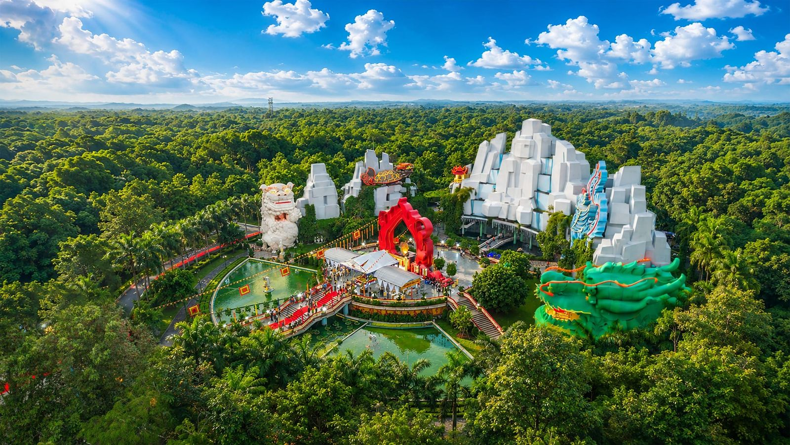
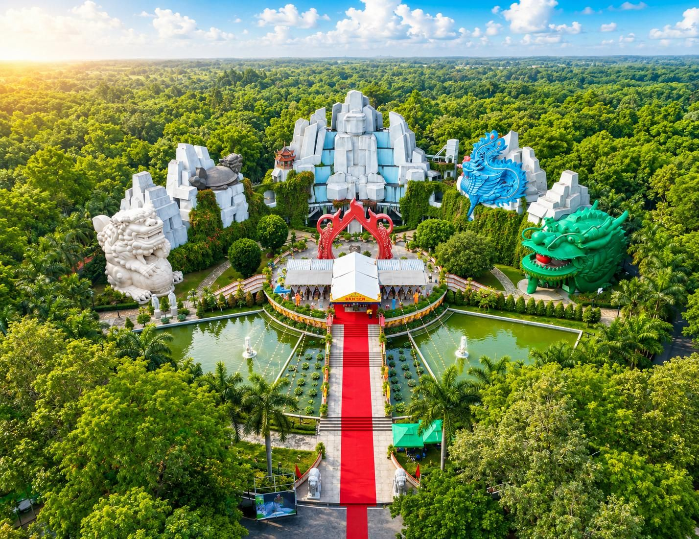
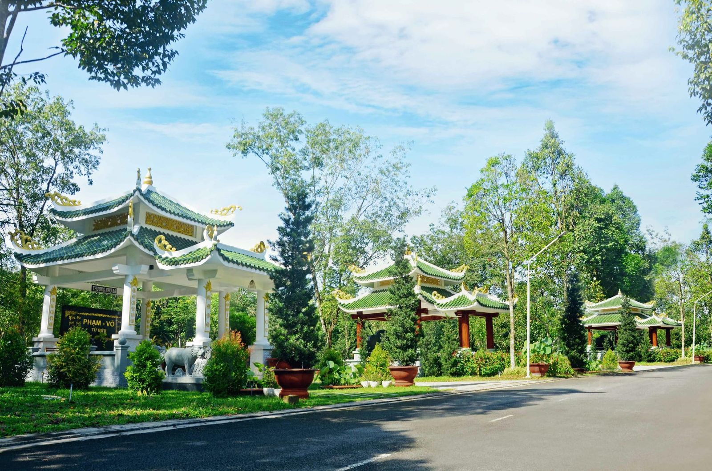
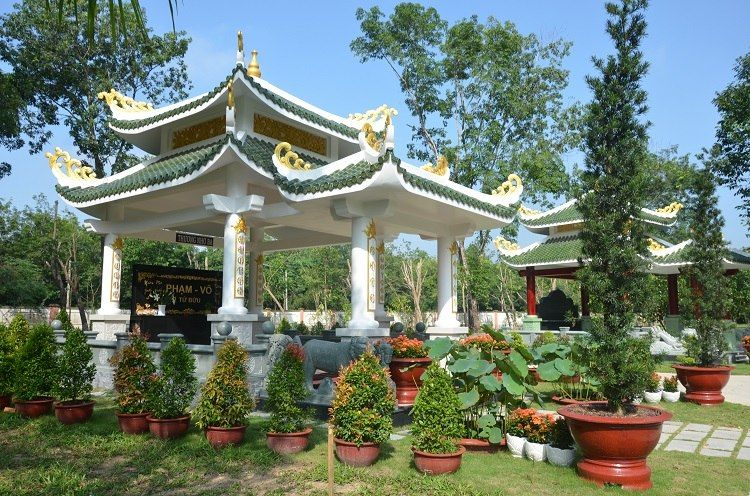
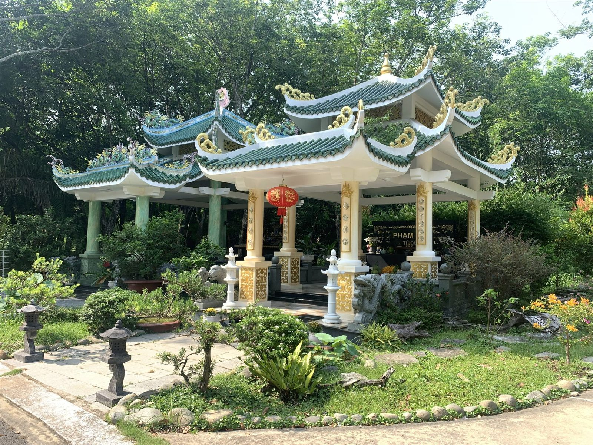
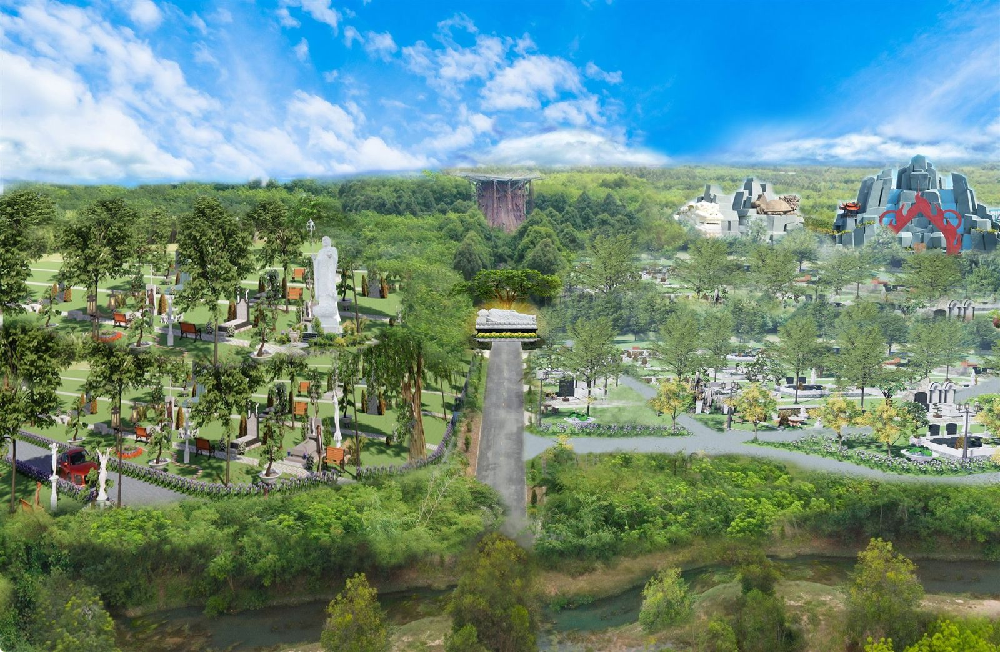

Khu mộ & vị trí an nghỉ
Tĩnh lặng tự nhiên, vẻ đẹp an yên
Nơi an nghỉ vượng khí, khác biệt vượt trội
Phong thủy hữu tình được kiến tạo từ những thế đất tự nhiên đặc biệt trong môi trường. Một thế đất phong thủy tốt hội tụ năm yếu tố cát tường: sơn (gọi là “long mạch”), huyệt vị, nguồn nước, thế ôm bao bọc và hướng. Năm yếu tố này khi quy tụ trong một bối cảnh hài hòa sẽ tạo nên môi trường tích tụ vượng khí (hay “sinh khí”). Bởi vậy, vị trí an nghỉ trên những vùng đất hội đủ các đặc điểm này được tin rằng sẽ mang lại phúc lộc, thịnh vượng và công danh cho con cháu đời sau.
Đọc thêm
Bên cạnh yếu tố cảnh quan, một nơi an nghỉ lâu dài cần được xem xét về quy hoạch, khả năng tiếp cận, chất lượng chăm sóc và sự thuận tiện khi gia đình đến thăm viếng. Các khu vực tại Hoa Viên được bố trí theo từng đặc điểm và nhu cầu sử dụng khác nhau.
Gia đình nên tham quan thực tế, xem sơ đồ vị trí và trao đổi kỹ về diện tích, hướng, thiết kế, phạm vi chăm sóc cùng những quy định xây dựng trước khi lựa chọn.

So sánh nhanh các khu
| Khu | Phù hợp | Diện tích tiêu chuẩn | Đường chính | Đường nội khu |
|---|---|---|---|---|
| Long Phụng Minh ĐồGói tiêu chuẩn | Mộ đơn, mộ đôi | 5,735 m²/mộ | Minh Đạo – Minh Lộc | 4,5 m |
| Đại Lộ Vĩnh HằngGói trang trọng | Mộ đơn, gần cổng chính | 11,63 m²/mộ | Đại Lộ Vĩnh Hằng | 4,8 m |
| Linh Hoa Tuệ ĐànGói cao cấp | Chọn hướng theo phong thủy | 10,87 m²/mộ | Đại Lộ Vĩnh Hằng | 5,2 m |
| Song ThânGói cao cấp | Song thân, nhà thờ họ tộc | 66 m² | Minh Nghĩa (rộng 6 m) | – |
| Trúc Lâm Bích ThủyKhu mộ gia tộc | Gia tộc, tối đa 10 mộ | 64–81 m² | Đường Thiên Thai | 3,6–4,5 m |
Giá và vị trí còn trống thay đổi theo từng thời điểm. Vui lòng liên hệ để nhận báo giá và xem sơ đồ lô cụ thể.


Khu Long Phụng Minh Đồ
An vị trang nghiêm · Chi phí hợp lý · Gần Chùa Thiên Phước
Khu mộ đơn – đôi được quy hoạch tiêu chuẩn với chi phí hợp lý, nằm gần Chùa Thiên Phước nên thuận tiện hương khói, lễ bái và phù hợp tín ngưỡng Phật giáo.
- Diện tích tiêu chuẩn
- 5,735 m²/mộ
- Trục đường chính
- Minh Đạo – Minh Lộc
- Đường nội khu
- 4,5 m
- Giữa hai hàng mộ
- 2 m
Khu vực được tổ chức theo các dãy mộ rõ ràng, tạo thuận tiện cho việc tìm vị trí và chăm sóc. Gia đình có thể trao đổi thêm về lựa chọn mộ đơn, mộ đôi, hướng và mẫu thiết kế phù hợp.


Khu Đại Lộ Vĩnh Hằng
Vị trí trung tâm · Dễ thăm viếng · Gần các công trình tâm linh
Khu mộ nằm gần cổng chính, kề cận các công trình tâm linh trọng điểm của Hoa Viên, thuận tiện di chuyển và tìm vị trí.
- Diện tích tiêu chuẩn
- 11,63 m²/mộ
- Trục đường chính
- Đại Lộ Vĩnh Hằng
- Đường nội khu
- 4,8 m
- Giữa hai hàng mộ
- 2 m
Lợi thế của khu vực là khả năng tiếp cận từ các trục đường chính và khoảng cách thuận tiện đến những công trình phục vụ lễ bái. Khi tham quan, gia đình nên kiểm tra vị trí cụ thể trên sơ đồ và lộ trình di chuyển thực tế.



Khu Linh Hoa Tuệ Đàn
Suối biếc rừng tre · Chốn về an lạc · Phúc trạch muôn đời
Dễ dàng tìm vị trí “Tọa cát – Hướng cát”, ưu tiên khách hàng quan tâm chuyên sâu về chọn hướng huyệt mộ theo phong thủy; đồng thời là trung tâm tổ chức các lễ hội tâm linh lớn hằng năm.
- Diện tích tiêu chuẩn
- 10,87 m²/mộ
- Trục đường chính
- Đại Lộ Vĩnh Hằng
- Đường nội khu
- 5,2 m
- Giữa hai hàng mộ
- 2 m
Cảnh quan tre, mặt nước và các khoảng xanh tạo nên không gian tĩnh tại cho hoạt động tưởng niệm. Gia đình quan tâm đến hướng mộ có thể trao đổi trên cơ sở vị trí thực tế và quy hoạch của từng lô.



Khu Song Thân
Không gian gia tộc · Tôn vinh song thân · Kết nối nhiều thế hệ
Khu mộ song thân trung tâm trong nhà thờ họ tộc, tích hợp không gian lưu cốt nhiều thế hệ và quy tụ gia đình. Quy hoạch liền kề, đồng bộ kiến trúc, thiết kế riêng biệt theo dấu ấn từng gia tộc; nằm ở vị trí trung tâm dự án với quỹ đất giá trị cao, giới hạn số lượng.
- Diện tích tiêu chuẩn
- 66 m²
- Trục đường chính
- Minh Nghĩa
- Độ rộng đường
- 6 m
- Số lượng
- Giới hạn
Không gian được định hướng cho nhu cầu tưởng niệm song thân và gắn kết nhiều thế hệ trong gia đình. Phương án kiến trúc, khu vực thờ tự, lối tiếp cận và khả năng lưu giữ tro cốt cần được thống nhất chi tiết trước khi triển khai.

Trúc Lâm Bích Thủy
Suối biếc rừng tre. Chốn về an lạc. Phúc trạch muôn đời.
Không gian an nghỉ dành cho gia đình nhiều thế hệ, được quy hoạch trên nền đất cao thoáng và dốc nhẹ tự nhiên. Khu vực nằm trên trục đường Thiên Thai, gần tượng Phật nhập Niết Bàn và cảnh quan rừng tre thanh tĩnh.
Nhận tư vấn khu gia tộc- Diện tích tiêu chuẩn
- 64–81 m²
- Quy mô an táng
- Tối đa 10 mộ
- Đường chính
- Đường Thiên Thai
- Đường nội khu
- Rộng 3,6–4,5 m
8 điều cần cân nhắc khi chọn nơi an táng
Những câu hỏi gia đình nên đặt ra với bất kỳ hoa viên nào, kể cả với chúng tôi, trước khi ký kết.
01Giá và các khoản chi phí liên quan
Gia đình nên yêu cầu bảng giá và phạm vi dịch vụ rõ ràng, đồng thời xác nhận các khoản như mở huyệt, lấp huyệt, xây dựng và chăm sóc mộ được tính riêng hay đã nằm trong hợp đồng.
02Vị trí mộ cụ thể
Trước khi ký kết, gia đình nên tham quan thực tế và xác nhận vị trí mộ trên sơ đồ quy hoạch. Mỗi khu vực có đặc điểm, diện tích và mức chi phí khác nhau.
03Bảo trì, tiện ích và dịch vụ
Gia đình nên tìm hiểu đơn vị nào chịu trách nhiệm chăm sóc đường sá, cây xanh và hạ tầng; phạm vi công việc; thời hạn thực hiện; cùng các khoản phí liên quan. Việc tham quan thực tế giúp đánh giá rõ hơn chất lượng cảnh quan và dịch vụ.
04Cân nhắc lâu dài cho bản thân và gia đình
Lựa chọn nơi an nghỉ là một quyết định riêng tư nhưng có ảnh hưởng lâu dài đến gia đình. Khoảng cách, đường đi, khả năng thăm viếng và nguyện vọng của các thành viên đều nên được cân nhắc.
05Liên kết giữa đơn vị vận hành và dịch vụ tang lễ
Một hoa viên có mối quan hệ gắn bó với đơn vị cung cấp dịch vụ tang lễ thường mang lại nhiều thuận tiện về vận chuyển cũng như các gói dịch vụ trọn gói khi lo liệu tang lễ.
06Các lựa chọn khu mộ
Hoa viên có thể có nhiều lựa chọn như mộ đơn, mộ đôi và khu mộ gia tộc. Vị trí, diện tích, thiết kế và hạng mục đi kèm sẽ ảnh hưởng đến tổng chi phí.
07Lắp đặt bia mộ và công trình
Hầu hết hoa viên đều có những quy định hoặc giới hạn về lựa chọn bia mộ và công trình nhằm giữ gìn tính thẩm mỹ của cảnh quan. Một số nơi yêu cầu sử dụng đơn vị thi công của họ, số khác cho phép tự do thuê nhà thầu riêng. Hãy luôn hỏi rõ quy định của đơn vị về vấn đề này.
08Kế hoạch phát triển trong tương lai
Kế hoạch phát triển tương lai của đơn vị vận hành thường phản ánh rõ tình hình tài chính của họ. Ngoài ra, cũng cần biết liệu các kế hoạch đó có ảnh hưởng đến cảnh quan khu mộ hiện tại hay không.

Khác biệt giữa hoa viên và nghĩa trang truyền thống
Khi chuẩn bị nơi an nghỉ cho bản thân hoặc người thân, gia đình có thể bắt gặp các khái niệm “hoa viên” và “nghĩa trang”. Hai cách gọi có cùng chức năng cơ bản, nhưng thường khác nhau về quy hoạch cảnh quan, tiện ích và dịch vụ chăm sóc lâu dài.
Thường hình thành qua nhiều giai đoạn nên vị trí, kiểu dáng công trình và lối đi có thể không đồng nhất. Việc quản lý, chăm sóc cảnh quan và hạ tầng tùy thuộc đơn vị hoặc cộng đồng phụ trách.
Quy hoạch tổng thể với đường nội khu, mảng xanh, khu vực nghi lễ và nguyên tắc kiến trúc chung, hướng đến môi trường trang nghiêm, thuận tiện thăm viếng và có kế hoạch chăm sóc lâu dài.
Gia đình vẫn nên kiểm tra kỹ hợp đồng, phạm vi dịch vụ và quy định của từng đơn vị vận hành.

Đặt lịch tham quan miễn phí
Hệ thống xe đưa đón tận tình, mời quý khách tham quan và tìm hiểu hoa viên trước khi quyết định. Nhân viên gọi lại trong giờ làm việc để hẹn ngày và giờ đón.
0818 555 444